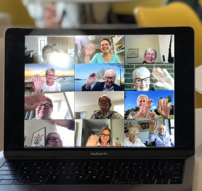
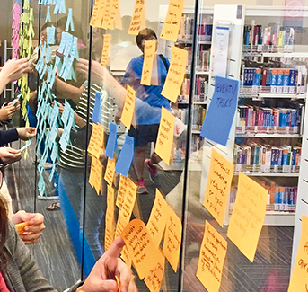
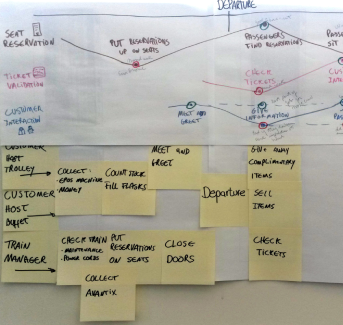

The Context:
AccuV plans to update its 10-year-old Supply Chain Management system (SCM1.0).
My Role:
Product Designer (Research / UX / UI)
The Objective:
To enhance warehouse productivity and improve real-time data exchange between physical stock and the database through a process of research, strategy, and design.
1. RESEARCH
2. CONCEPTUALIZE
3. DESIGN
1. RESEARCH
2
3
The expectation for the new app from all parties:
· Current frustrations and pain points?
· What do the management expect?
· What the associates really need?
Intensive commutation with warehouse management and associates.
· Meetings with management
· Meetings with associates
· Warehouse on-floor study / experience / interview
Dock
Shelving
Yard
Management meetings:
(Interesting Takeaways)
· Want to monitor and track the activities of each associate individually.
· Want to divide a large task into smaller pieces and track progress.
· Want to add work types not in the previous app.

Warehouse experience and interviews:
(Interesting Takeaways)
· Many cases need assistance and assign to the same task.
· Sometimes has to stop in the middle of a current task.
· mobile screen is too small - input difficulties.
1
2. CONCEPTUALIZE
3
Overwhelmed with insights, we needed to start prioritizing to form a strategy.
· Understand pain points, desires, and needs of the users.
· Categorize and classify all the gathered insights.
· Present our synthesis to stakeholders.
Jumped into secondary research to form our product strategy and experience.
· Affinity map.
· Prioritized customer painpoints, wants and needs.
· Presented the insights to stakeholders.
Affinity map
(Interesting Takeaways)
· All jobs can be covered by tasks.
· Some task flows are too long.
· Mobile is too small, camera is not efficient.

Customer journey map
(Interesting Takeaways)
· Sometimes associates will work on a same task together.
· Some job not covered by current work flow.
· Preferred sub work flow.

Key takeaways
· Need bigger screen - iPad.
· Each present task flow is too long. Need to break into small pieces.
· Input method is key to improve proficiency.

1
2
3. DESIGN
Data Inputing interaction design
To help warehouse associates work efficiently and accurately, clear UX principles for data inputting are crucial.

Conclusion:
1. Scanner - the most efficient method
2. Tap more, type less
3. Numeric keyboard - If only numbers are required, slide up the numeric keyboard.
4. "Paste" button - Easy copy & paste with "paste" button
User flow
The SCM2.0 app is a task-driven application focused on functionality and usability. It streamlines workflows and increases efficiency by providing users with tools to manage projects, track progress, and collaborate with team members.
Basic Layouts
To optimize the app's display and make the most of the available screen space, the app is fixed to a horizontal view to ensure that the maximum width. This can improve the readability of the app's interface and make it easier for users to navigate through the various features and functions.

2 splits view
3 splits view
Wireframe & Prototype
During the wireframing process, each module of the app will be addressed individually, such as Search & Filter, Create Task, Group Tasks, Picking, Replenishment, Movement, Receiving, and Putaway...
Once each module is completed, meetings will be arranged to showcase the wireframes to different teams and departments. This approach ensures that each module is fully developed and tested before moving on to the next, and provides opportunities for feedback and collaboration throughout the development process.
I wrote out the instructions as a series of points, and use
lines to indicate where the instructions should be applied or
followed.
This provides a consistent and intuitive user experience, which
can be particularly important for complex or multi-step
processes.
In the design process, I also label the uncertainties in red and
write down my thoughts or concerns.
These will be discussed in meetings for transparency and
collaboration.


{kind=link}
{kind=link}
{kind=link}
{kind=link}
{kind=link}
{kind=link}
{kind=link}
{kind=link}
{kind=link}
{kind=link}